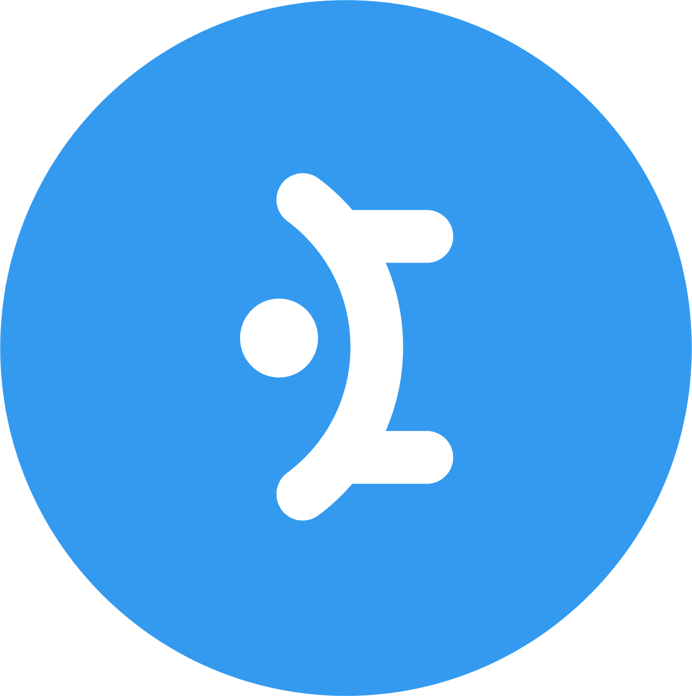
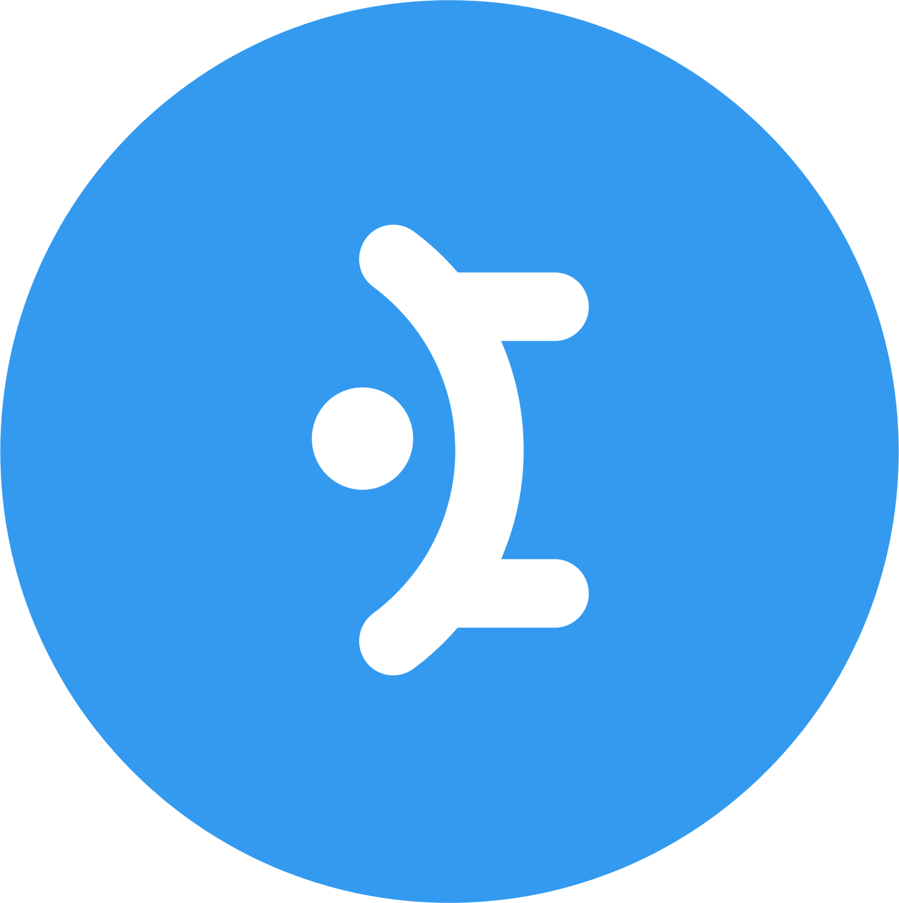

Sviluppatore Web, NATLA


 



Marzo 2025 - Presente
Progettazione e sviluppo di soluzioni IT per clienti Enterprise. Collaboro alla definizione delle specifiche tecniche, al design architetturale, all'implementazione di nuove funzionalità e all’ottimizzazione delle performance delle applicazioni esistenti. Utilizzo framework moderni, integrazione di API e pratiche DevOps per garantire qualità del codice, manutenibilità e scalabilità.